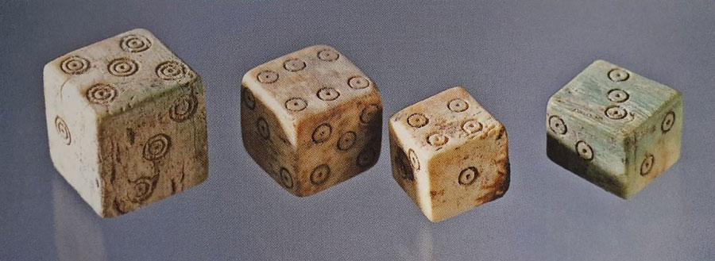

История настольных игр от древности до современности:
Многие философы и психологи различных времен рассуждали о роли игры в жизни человека. Большинство из них пришли к единому мнению, что человеческая жизнь представляет собой единый процесс игры и актерского мастерства. Настольные игры возникли несколько тысячелетий тому назад. Какая она, первая игра, ученые до сих пор выдвигают предположения и гипотезы, но фактических доказательств их происхождения в мире не существует. Ходят слухи, что впервые игры появились раньше столов. Однако доказательств каких-либо нет. Ученым удалось восстановить только хронологию происхождения настольных игр.
Как называется настольная игра, появившаяся впервые во времена до нашей эры, об этом знает не каждый игрок. Самая древнейшая настольная игра, завоевавшая большую популярность среди населения Древнего Египта четыре тысячи лет до нашей эры, называется сенет. По правилам игры и внешнему виду она напоминала стандартные шашки. Немногим позднее три тысячи лет до нашей эры появились игральные кости и нарды, правила которых немного отличались от современной игры. Еще немногим позднее две тысячи лет тому назад европейский народ придумал такую настольную игру, как Го. Стоит отметить, что данная игра сохранилась и по сегодняшний день и очень популярна во многих странах. Разница между изданиями заключается в правилах игры и дизайне. Сколько стоили настольные игры в древние времена – об этом история умалчивает.
В пятом веке в Индии появилась первая игра шахматного типа – Чатуранга. В седьмом веке на востоке были обнаружены первые игральные карты, которыми по сегодняшний день любят играть все народы мира без исключения. В восьмом веке в Европе и Азии люди впервые узнали про домино. Особенно в игру мозаичного типа полюбил играть итальянский народ.
В 1870 году появилась интересная и увлекательная игра Маджонг, а немногим позднее азартная игра с использованием игральных костей. Как называлась настольная игра с использованием игральных костей, появившаяся впервые в Китае, историкам, к сожалению, до сих пор не известно. Спустя десять лет в Великобритании в массовое производство запустили игру шашечного вида на игральной доске восемь на восемь клеток. Великобританская игра знаменита до сих пор под названием Реверси. Сегодня в нее, как и раньше, любят играть все народы мира.
В 1934 году Чарльз Дэрроу разработал увлекательную настольную игру под названием Монополия. С тех пор экономическая стратегическая игра полюбилась практически во всех странах. Из года в год она изменяется и выпускается в различных вариациях, которые не менее интересны и увлекательны. Сколько стоят настольные игры сегодня – не секрет и к тому же они всем доступны, но в начале двадцатых годов настольную игру могли позволить себе только зажиточные горожане. В двадцатый век появилось большое количество различных настольных игр, сохранивших свою актуальность по сегодняшний день. Наиболее популярными из них считаются Цитадели, Колонизаторы, Открыватели, Каркассон, Балда, Скрэббл и многие другие.
В связи с большим спросом настольных игр на мировом игровом рынке стало появляться все больше предложений от различных производителей. По сравнению с прошлыми временами выбор невероятно большой. На рынке можно встретить как новые настольные игры, так и старые, но при этом усовершенствованные, обновленные и дополненные издания.
